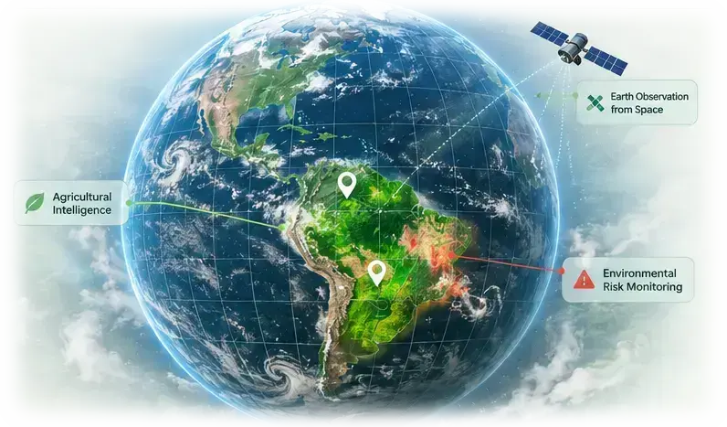

Earth Observation
Real satellite data. Global coverage.
Earth systems · Agriculture · Intelligence
Turn Earth observation into meaningful agricultural intelligence. Explore environmental changes, understand emerging risks, and discover smarter ways to adapt.
Earth observation data, made easier to explore with AI.

Real satellite data. Global coverage.
Track change. Assess risk.
Turn insight into action.
View Earth observation data across the globe.
Uncover environmental trends, risks and opportunities.
Make informed decisions for more resilient agriculture.
Earth observation sources
Five NASA data products bring weather, rainfall, soil moisture, vegetation and fire context together for agricultural intelligence.
Daily weather and solar radiation
POWER Daily Point APIGlobal precipitation estimates
GPM_3IMERGDF.07Surface and root-zone soil moisture
SPL4SMGP.008Vegetation health indices
MOD13Q1.061Near-real-time fire detections
VIIRS_NOAA21_NRTData availability varies by source; some products require NASA Earthdata or FIRMS credentials. NASA does not endorse AgriShif. The globe above is illustrative, not live data.
A more informed point of view
Explore environmental conditions across the Earth and discover what the data can tell you.
Launch AgriShif Explorer